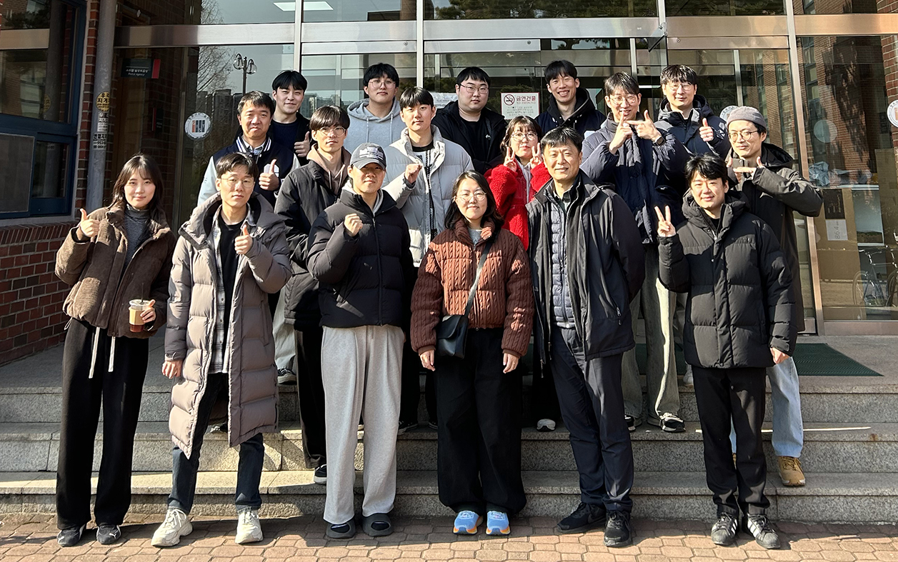
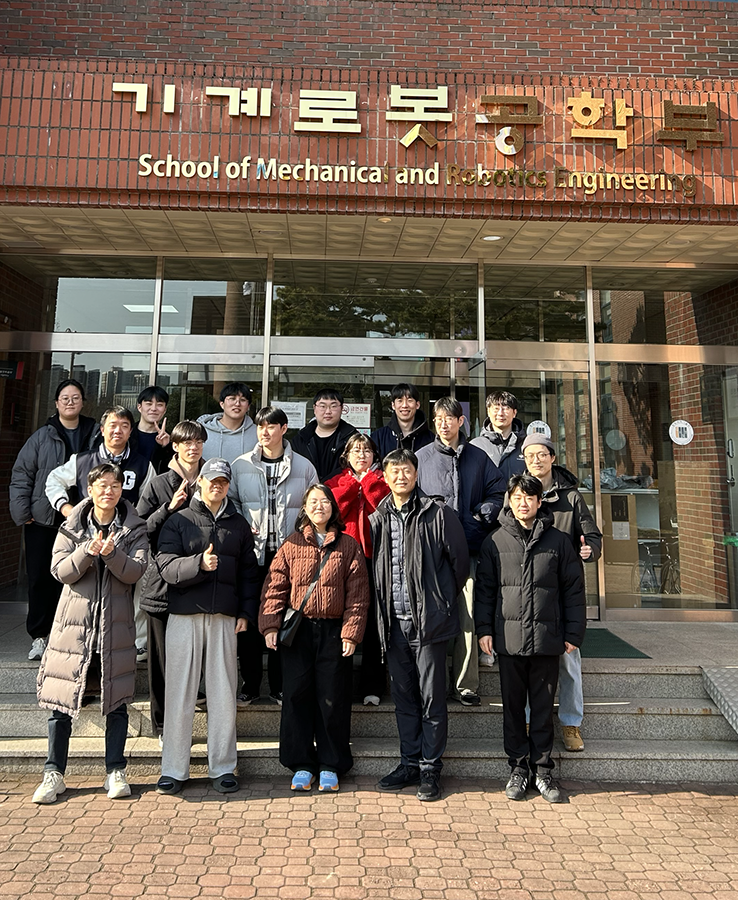

작성자: 허필원
우리 연구실의 임문영 학생이 개인적인 사정으로 인해 석사과정 중이던 연구를 중단하고 학교를 떠나게 되었습니다.
임문영 학생은 연구실에서 근육의 볼륨 변화를 바탕으로 근전도 신호를 추정하는 연구를 열정적으로 수행하였습니다. 또한, 양궁 관련 과제를 성실히 수행하였고, 특히 본인의 뛰어난 뜨개질 재능을 활용하여 과제 진행에 큰 도움을 주었습니다.
연구실 구성원 모두가 임문영 학생과 함께했던 시간에 감사하며, 앞으로의 삶에서 건강하고 행복하게 본인이 하고 싶은 일들을 모두 이루기를 진심으로 응원합니다.
고마웠어요, 문영 학생! 앞으로의 행복을 기원합니다.
아래 사진은 지난 1월 24일 학교를 방문했을 때의 모습입니다.

